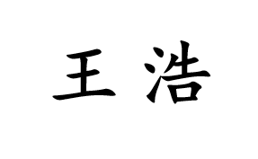

Hao Wang Research Assoc. Professor E-mail: cshaowang [@ sign] gmail.com (or hwang [@ sign] scu.edu.cn) |
Office: B316, Building B, Wangjiang Campus
-–>> News: Several openings for master students. Drop me an email if this interests you.
Hao Wang is a Research Associate Professor with the College of Computer Science at Sichuan University (SCU). He received his Ph.D. in Computer Science from Southwest Jiaotong University (SWJTU). Before joining SCU, he worked at Zhejiang Lab and was a Research Fellow at Nanyang Technological University (NTU). He was also a Visiting Student at the University of Illinois at Chicago (UIC) for two years and a Visting Scholar at the University of Regina.
He is also a member of XLearning research group at SCU.
Lifelong and Continual Learning
Open-world Learning
Multi-view Learning
Sentiment Analysis and Opinion Mining
Spatial and Spatio-Temporal Data Mining
Publications (in chronological order)
Conference Program Committee
Senior PC: PAKDD (2023-2025)
Area Chair: EMNLP (2023)
ACL Rolling Review (ARR): 2021 - present
2025: AAAI, AISTATS, ICLR, COLING, etc.
2024: AAAI, ACL, ACMMM, ICLR, ICML, KDD, NeurIPS, EMNLP, LREC-COLING, SDM, NAACL, COLM, NLPCC, etc.
2023: AAAI, ACL, ACMMM, ICML, KDD, NeurIPS, IJCNLP-AACL, PRICAI
2022: ACL, ACMMM, NAACL, AACL, NeurIPS, EMNLP, ECML-PKDD, COLING, PRICAI (Special Track)
2021: AAAI, ACL-IJCNLP, ACMMM, EMNLP, SocialNLP@NAACL-2021
2020: AAAI, AACL-IJCNLP
Journal Reviewer
ACM Transactions on the Web (TWEB) Distinguished Reviewer Board (2022-2024)
ACM CSUR, ACM TODS, IEEE TPAMI, TKDE, TIP, TCYB, TNNLS, TAFFC, TMM, TCSVT, TETCI, TBD, TITS, etc.
Fall 2024, Data Structures and Algorithms